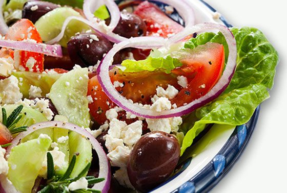

Данная публикация посвящена влиянию питания на развивающийся мозг ребёнка и тем продуктам питания, которые нужно есть, чтобы обеспечить мозг пищей.
Рацион питания и мозг ребёнка
Недавние исследования рассмотрели возможные последствия диеты со стороны развивающегося головного мозга. По данным австралийских учёных, неправильное питание было связано с ухудшением психического здоровья более чем у 3000 детей и подростков в возрасте 11-18 лет. Исследователи выяснили, что у тех, в чьём рационе в большом количестве присутствовали снэки и обработанные пищевые продукты, оценка, согласно опроснику для оценки качества жизни у детей (PedsQL), была значительно ниже, а те дети, чей рацион становился беднее с течением времени, отмечали также ухудшение психического здоровья в течение 2 лет наблюдения.
По данным недавно проведённого крупного норвежского когортного исследования было установлено, что рацион питания во время беременности и в первые 5 лет жизни имеет большое значение для психического здоровья детей. Дети, которые ели больше нездоровой пищи, например, обработанные сладости, газировку и пиццу, в первые годы жизни демонстрировали более интернализированное поведение, что включало в себя беспокойство, подавленность, плаксивость и тревожность, а также более экстернализированное поведение, что включало агрессию, истерики и гиперактивности, в возрасте от 18 месяцев до 5 лет. Следует отметить, что дети, чьи мамы употребляли больше таких продуктов во время беременности, демонстрировали более выраженное экстернализированное поведение, независимо от рациона их питания.
Пища для мозга: что следует есть?
Если говорить в общем, вердикт ещё не вынесен. Как сообщалось ранее, работы за последние несколько лет свидетельствуют о том, что диета с высоким содержанием мононенасыщенных жирных кислот — МНЖК (содержатся в оливковом масле, авокадо, орехах), полиненасыщенных жирных кислот — ПНЖК (которые содержатся в орехах, семенах, рыбе, зеленых листовых овощах) и добавок с эйкозапентаеновой кислотой может постепенно снизить риск развития депрессии. Подобным образом, приверженность Средиземноморской диеты — как правило, этот термин обозначает диету, богатую фруктами, овощами, орехами, злаками, рыбой и высоконенасыщенными жирами — ассоциируется с 30% снижением риска депрессии, по сравнению с рационом, содержащим в большом количестве мясо и молочные продукты или транс-жирные кислоты; потребление последних веществ связано с повышенным риском депрессии. Однако, как обсуждалось ранее, существующие данные содержат противоречивые сведения о воздействии углеводов и жиров на мозг; очевидно, что необходимо проведение дополнительных исследований.

Более точные выводы
Упрощённый взгляд на отдельные пищевые факторы, такие как углеводы или насыщенные жиры, игнорирует тот факт, что каждый компонент диеты взаимодействует с другими компонентами весьма сложным образом. По сути, наиболее важно сосредоточить внимание на рационе питания в целом, чтобы улучшить состояние здоровья, и в этом смысле средиземноморская диета имеет самую сильную доказательную базу. В недавнем систематическом обзоре делается вывод о том, что соблюдение правильного питание снижает риск депрессии и снижения когнитивных способностей, а в крупном рандомизированном исследовании PREDIMED было показано, что средиземноморская диета снижает риск развития заболеваний сердца, улучшает когнитивные функции, а также может предотвратить депрессию. Как таковая, диета с высоким содержанием фруктов, овощей, рыбы, растительных масел, орехов и цельных зёрен, при пониженном потреблении сахара, мясных полуфабрикатов, жиров животного происхождения, вероятно, будет лучшим выбором для поддержания здоровья нашего мозга, а также и других частей тела. Такие диеты созвучны национальным рекомендациям по питания во всём мире. Основная идея заключается в том, что физическое здоровье может быть так же важно для психического здоровья, как и психическое здоровье для физического. Врачи должны ещё раз подумать, со всеми ли пациентами они обсуждают значимость правильного питания, и входят ли в их число лица с психиатрическими заболеваниями.
Brain Food: What to Avoid
Medscape